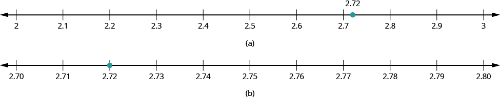
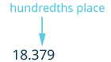
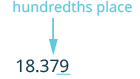
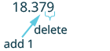
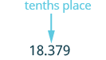
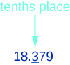
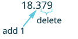
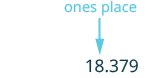
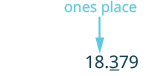
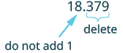

দশমিক সংখ্যার আসন্নমান নির্ণয় করো
উৎস-অনুগত উপবিভাগ · m81293-fs-id1739414। সম্পূর্ণ বইয়ের অনুবাদ এখনও চলছে। গাণিতিক চিহ্ন, সংখ্যা ও মূল কাঠামো অক্ষুণ্ণ; প্রযোজ্য ক্ষেত্রে সূত্রের শব্দলেবেল বাংলায় অনূদিত। মূল ছবির ভিতরের ইংরেজি লেবেলের অর্থ বাংলা বিবরণে আছে। স্বাধীন শিক্ষক ও ভাষা-পর্যালোচনা বাকি। অন্য উপবিভাগের উৎস-লিঙ্কে ইন্টারনেট প্রয়োজন।
দশমিক সংখ্যার আসন্নমান নির্ণয় করো
উৎসে দেওয়া যুক্তরাষ্ট্রের উদাহরণে গ্যাসোলিনের দাম প্রায়ই ডলারের সহস্রাংশ পর্যন্ত লেখা হয়। যেমন, কোনও পাম্পে সিসামুক্ত গ্যাসোলিনের প্রতি গ্যালনের দাম লেখা থাকতে পারে । ওই দামে ঠিক এক গ্যালন কিনলে দিতে হবে , কারণ চূড়ান্ত দাম নিকটতম সেন্টে আসন্নমান করে নেওয়া হয়। অঋণাত্মক পূর্ণসংখ্যা অধ্যায়ে দেখেছি, নির্ভুল মানের প্রয়োজন না হলে তার কাছাকাছি মান পেতে আসন্নমান নির্ণয় করি। ধরা যাক, -এর নিকটতম ডলারে আসন্নমান চাই। এটি কোনটির বেশি কাছে, না আবার -এর নিকটতম দশ সেন্টে আসন্নমান চাইলে কোনটির বেশি কাছে হবে, না এই প্রশ্নগুলির উত্তর পেতে এই চিত্রের সংখ্যারেখাগুলি সাহায্য করবে।

দুটি সংখ্যারেখা। (ক) 2 থেকে 3 পর্যন্ত 0.1 ব্যবধানে দাগ আছে; 2.7 ও 2.8-এর মাঝে 2.72 বিন্দুটি চিহ্নিত। এটি 2-এর চেয়ে 3-এর বেশি কাছে। (খ) 2.70 থেকে 2.80 পর্যন্ত 0.01 ব্যবধানে দাগ আছে; 2.72 দাগে বিন্দু। এটি 2.80-এর চেয়ে 2.70-এর বেশি কাছে।
ⓑ দেখা যায়, -এর বেশি কাছে আছে ; তুলনার অপর সংখ্যাটি হল তাই -এর নিকটতম দশাংশে আসন্নমান
সংখ্যারেখা ছাড়াও কি দশমিক সংখ্যার আসন্নমান নির্ণয় করা যায়? হ্যাঁ। অঋণাত্মক পূর্ণসংখ্যার আসন্নমান নির্ণয়ের পদ্ধতির উপর ভিত্তি করে তা করা যায়। সম্পাদকীয় স্পষ্টীকরণ: নির্দিষ্ট স্থান পর্যন্ত আসন্নমান মানে ওই স্থানে লেখা সম্ভব এমন নিকটতম মান বেছে নেওয়া। যেমন, শতাংশ স্থান পর্যন্ত রাখলে দশমিকের পরে দুই ঘর থাকবে। পরের ধাপগুলি অঋণাত্মক সংখ্যার জন্য। ঠিক মাঝামাঝি হলে এখানে বড় মানটি নেওয়া হয়; ঋণাত্মক সংখ্যায় এই পাঠের নিয়ম ব্যবহার করতে মাইনাস চিহ্ন বাদ দিয়ে আসন্নমান বের করে শেষে চিহ্নটি ফিরিয়ে দেবে—ফলে ঠিক মাঝামাঝি হলে শূন্য থেকে দূরের মানটি নেওয়া হয়। এটি এই পাঠের ঘোষিত নিয়ম; অন্য প্রসঙ্গে মাঝামাঝি মান বাছাইয়ের অন্য নিয়মও থাকতে পারে। 9-এর সঙ্গে 1 যোগ হলে বাঁ দিকের ঘরে হাতে থাকা 1 যোগ করতে হবে; যেমন 1.999-এর নিকটতম শতাংশে আসন্নমান 2.00। প্রতিটি চাওয়া স্থানের জন্য মূল সংখ্যা থেকে আলাদা করে আসন্নমান বের করো, আগের আসন্নমান থেকে আবার নয়।
অনুশীলন · এই প্রশ্নের লিঙ্ক
-এর নিকটতম শতাংশে আসন্নমান নির্ণয় করো।
সমাধান
দশমিক সংখ্যা 18.379। |
|
| শতাংশের স্থানটি খুঁজে তিরচিহ্ন দাও। |  18.379 সংখ্যায় শতাংশের স্থানের অঙ্ক 7-এর দিকে তিরচিহ্ন; উপরে শতাংশের স্থান লেখা আছে। |
| 7-এর ঠিক ডান দিকের অঙ্কটির নীচে দাগ দাও। |  18.379 সংখ্যায় শতাংশের অঙ্ক 7-এর দিকে তিরচিহ্ন। তার ঠিক ডান দিকের অঙ্ক 9-এর নীচে দাগ দেওয়া আছে। |
| 9 অন্তত 5, তাই 7-এর সঙ্গে 1 যোগ করো। |  18.379 সংখ্যার শতাংশের অঙ্ক 7-এর সঙ্গে 1 যোগ করার নির্দেশ। শেষ অঙ্ক 9 বাদ দিতে বলা হয়েছে। এতে 18.38 পাওয়া যায়; পূর্ণসংখ্যার অংশ 18 বদলানো হচ্ছে না। |
| শতাংশের স্থানের ডান দিকের সব অঙ্ক বাদ দিয়ে সংখ্যাটি লেখো। | শতাংশ পর্যন্ত আসন্নমান 18.38। |
| 18.379-এর নিকটতম শতাংশে আসন্নমান 18.38। |
অনুশীলন · এই প্রশ্নের লিঙ্ক
-এর আসন্নমান নির্ণয় করো—নিকটতম ⓐ দশাংশে ⓑ পূর্ণসংখ্যায়।
সমাধান
| ⓐ 18.379-এর নিকটতম দশাংশে আসন্নমান নির্ণয় করো। | |
দশমিক সংখ্যা 18.379। |
|
| দশাংশের স্থানটি খুঁজে তিরচিহ্ন দাও। |  18.379 সংখ্যায় দশাংশের স্থানের অঙ্ক 3-এর দিকে তিরচিহ্ন; উপরে দশাংশের স্থান লেখা আছে। |
| দশাংশের অঙ্কটির ঠিক ডান দিকের অঙ্কের নীচে দাগ দাও। সম্পাদকীয় সতর্কতা: মূল ছবিতে ভুল করে 3-এর নীচে দাগ আছে; এই ধাপে 7-এর নীচে দাগ দেওয়া উচিত। ছবিটি অপরিবর্তিত রাখা হয়েছে। |  18.379 সংখ্যায় দশাংশের অঙ্ক 3-এর দিকে তিরচিহ্ন এবং 3-এর নীচে দাগ আছে। উৎসের ছবিতে দাগটি ভুল জায়গায়: এই ধাপে ঠিক ডান দিকের অঙ্ক 7-এর নীচে দাগ দেওয়া উচিত। |
| 7 অন্তত 5, তাই 3-এর সঙ্গে 1 যোগ করো। |  18.379 সংখ্যার দশাংশের অঙ্ক 3-এর সঙ্গে 1 যোগ করার নির্দেশ। তার ডান দিকের অঙ্ক 7 ও 9 বাদ দিতে বলা হয়েছে। এতে 18.4 পাওয়া যায়; এখানে নিকটতম পূর্ণসংখ্যা বের করা হচ্ছে না। |
| দশাংশের স্থানের ডান দিকের সব অঙ্ক বাদ দিয়ে সংখ্যাটি লেখো। | দশাংশ পর্যন্ত আসন্নমান 18.4। |
| তাই 18.379-এর নিকটতম দশাংশে আসন্নমান 18.4। |
| ⓑ 18.379-এর নিকটতম পূর্ণসংখ্যায় আসন্নমান নির্ণয় করো। | |
দশমিক সংখ্যা 18.379। |
|
| এককের স্থানটি খুঁজে তিরচিহ্ন দাও। |  18.379 সংখ্যায় এককের স্থানের অঙ্ক 8-এর দিকে তিরচিহ্ন; উপরে এককের স্থান লেখা আছে। |
| এককের স্থানের ঠিক ডান দিকের অঙ্কটির নীচে দাগ দাও। |  18.379 সংখ্যায় এককের অঙ্ক 8-এর দিকে তিরচিহ্ন। তার ঠিক ডান দিকের অঙ্ক 3-এর নীচে দাগ দেওয়া আছে। |
| 3 সংখ্যাটি 5-এর চেয়ে বড় বা সমান নয়, তাই 8-এর সঙ্গে 1 যোগ কোরো না। |  18.379 সংখ্যার এককের অঙ্ক 8-এর সঙ্গে 1 যোগ না করার নির্দেশ। দশমিকের পরের 379 বাদ দিতে বলা হয়েছে; নিকটতম পূর্ণসংখ্যায় আসন্নমান 18। |
| এককের স্থানের ডান দিকের সব অঙ্ক এবং দশমিক বিন্দু বাদ দিয়ে সংখ্যাটি লেখো। | নিকটতম পূর্ণসংখ্যায় আসন্নমান 18। |
| তাই 18.379-এর নিকটতম পূর্ণসংখ্যায় আসন্নমান 18। |